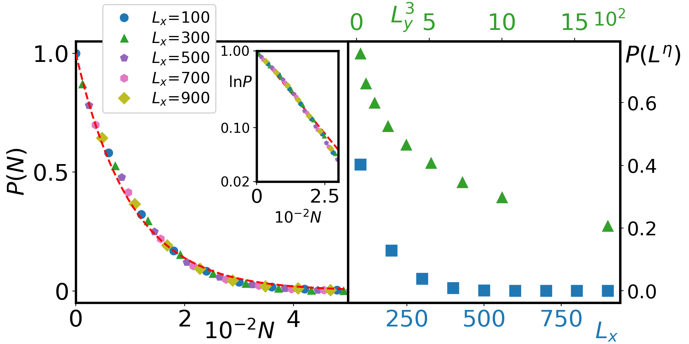
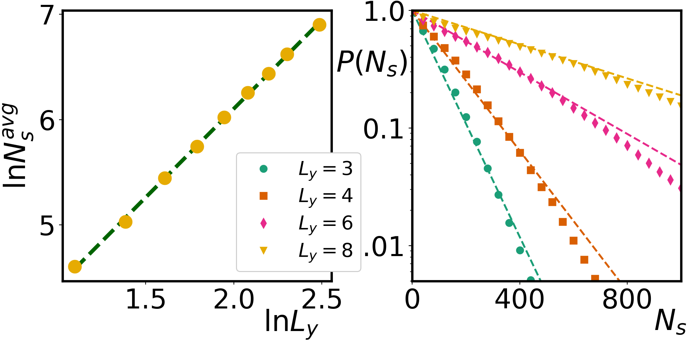
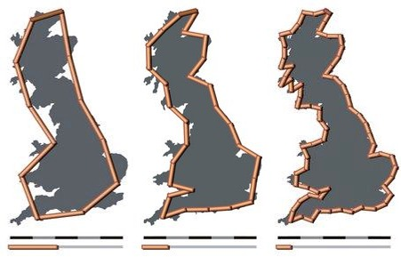
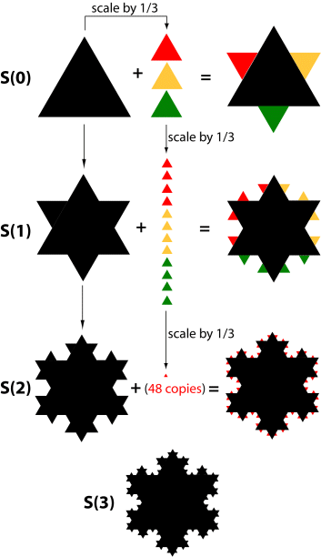
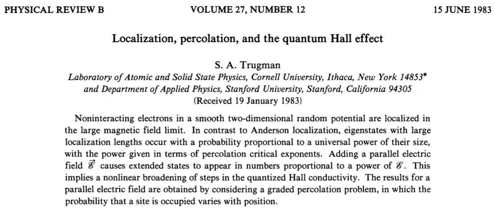
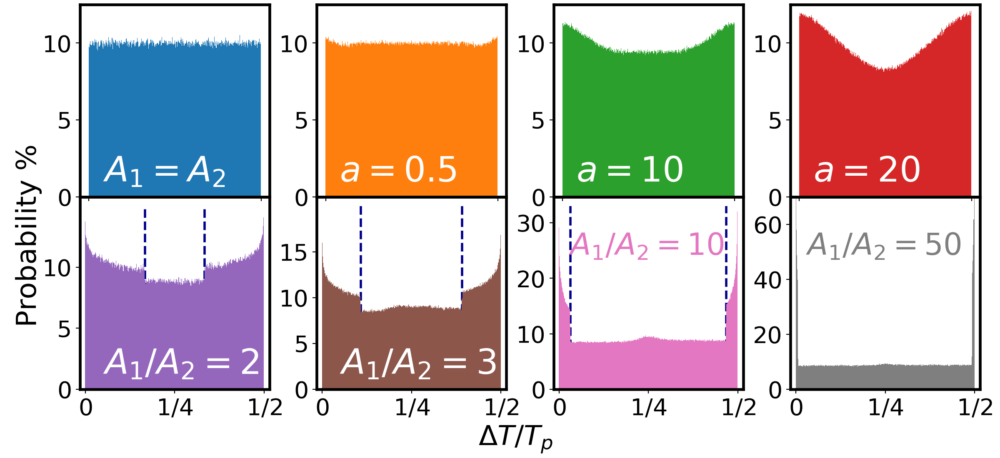
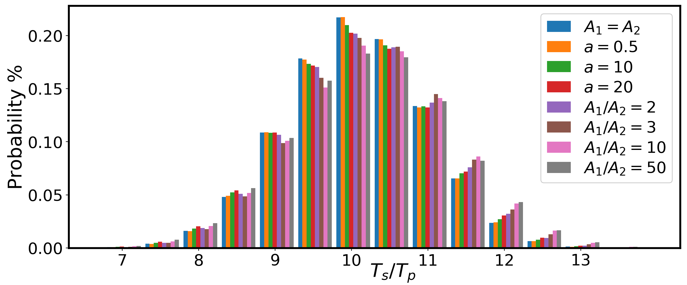
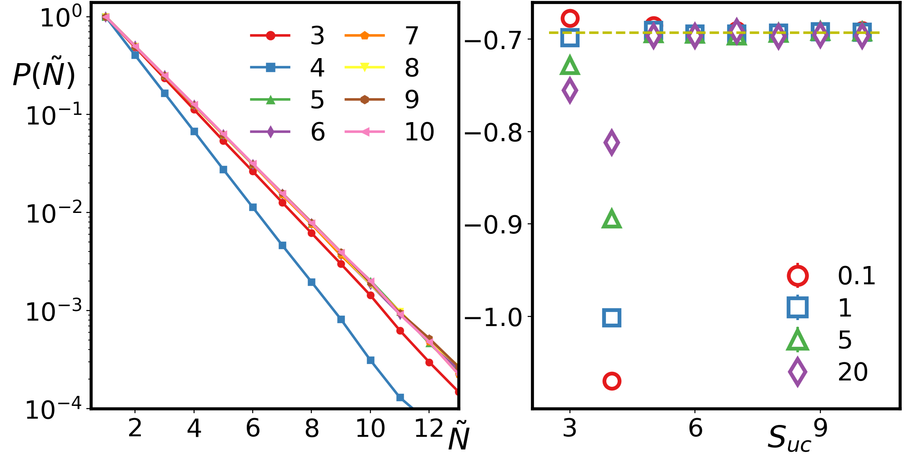

Los Alamos National Laboratory
Los Alamos National Laboratory
Los Alamos National Laboratory
Los Alamos National Laboratory
Los Alamos National Laboratory
Los Alamos National Laboratory
Los Alamos National Laboratory
Dynamics of Holstein model in strong coupling and high temperature: diffusion or not?
Chen-Yen Lai
T-4 & Center for Integrated Nanotechnologies
LA-UR-17-29749


Anderson localization
Diffusion
Holstein Model
- Local optical phonons with single frequency
- High temperature $\Rightarrow$ $N_p\hbar\Omega\approx k_bT$
- Strong coupling $\Rightarrow$ Lot of phonon modes required
- Only one electron (itinerant particle) in the system
The walking of the itinerant particle
Classical Toy Model
- Itinerant particle $\Rightarrow$
Classical object move through the lattice. - Phonons $\Rightarrow$ Local harmonic potential
$V_i(t)\!=\!\color{blue}{A_i}\cos(\frac{2\pi}{T_p}\color{red}t+\color{blue}{\phi_i})$ where period $T_p\!=\!2\pi/\Omega$. - Itinerant particle sees on-site and neighboring time-dependent potentials.
- In adiabatic limit, hopping $\overline{t}$ causes avoided crossing.
- Itinerant particle jumps to the neighboring site as soon as avoided crossing occurs despite there is another crossing in the near future.
- Any two potentials, the next crossing is $T_p/2$ away, $t_3\!=\!t_1+T_p/2$!
Never jumps back if there is another neighbor.
One dimensional (1D) periodic chain
- Particle jumps to neighboring site due to the avoided crossing.
- Travel along the same line style, solid, dashed, or dash-dotted.
- Track the site index over time gives the repeating position string (RPS).
For example: $\color{blue}1\!-\!\color{green}2\!-\!\color{red}0\!-\!\color{blue}1\!-\!\color{green}2\!-\!\color{red}0\!-\!\cdots$ - Jumps made back to starting point is system size $N_s\!=\!L$.
- RPS is determined by initial conditions.
This is NOT diffusion!!
Semiclassical approach
Itinerant particle as quantum wavefunction
$V_i(t)\!=\!\color{blue}{A_i}\cos(\frac{2\pi}{T_p}t+\color{blue}{\phi_i})$ where period $T_p\!=\!2\pi/\Omega$ and $\phi_i\in[0,2\pi)$.
$H(t+T_p)\!=\!H(t)$ $\Rightarrow$ periodic driving system (Floquet).
Given initial wavefunction, the dynamics are solved by $i\partial_t\psi=H\psi$.
Temperature and coupling are embedded in $A^\text{rms}\gg\overline{t}$ for strong coupling and high temperature.
Small time step $\delta t\!=\!10^{-3}t_0$ and large phonon period $T_p$ as adiabatic limit.
- No restriction on jumping back.
- Effects on very close crossing of potentials.
12-site periodic chain
$A^\text{rms}\!=\!3.8\bar{t}$
$A^\text{rms}\!=\!6.7\bar{t}$
$A^\text{rms}\!=\!21.8\bar{t}$
This is NOT diffusion in some parameter regimes!!
Fully quantum mechanics
Holstein model
- Temperature $T\!\sim\!\langle N_p\rangle\frac{\hbar\Omega}{k_b}$ and coupling $\lambda$ are independent.
- Eigenstates and dynamics are simulated by Lanczos-based algorithm.
- Small system size and maximum phonon quanta $N^\text{max}_p$ due to unbounded phonon Hilbert space.
- Dynamics from excited states:
$\vert\Psi(t\!=\!0)\rangle\!=\!\frac{1}{\sqrt{2}}(\vert \psi_m\rangle \!+\! \vert\psi_n\rangle)$ where $H\vert\psi_m\rangle\!=\!E_m\vert\psi_m\rangle$.
- Dynamics from phonon coherent states:
$\vert\Psi(t=0)\rangle=\vert i_F;\alpha_0, \alpha_1, \alpha_2\rangle$ where $a\vert\alpha_i\rangle\!=\!\alpha_i\vert\alpha_i\rangle$, $\alpha_i\in C$.
Excited States
Phonon Coherent State
Beyond 1D Chain
$N$-leg ladder

$L_x\!\gg\!L_y$ with PBC in both directions.
Q: Finite trajectory?
A: Yes, $N_s^\text{max}\!=\!2\!\times\!N_\text{bonds}$.
Q: Repeat the same trajectory?
A: Yes, past and future.
Semiclassical
Classical
Q: Probability of taking $N_s$ jumps to close trajectory $p(N_s)$?
$P(N)\!=\!\int_N^{N_s^\text{max}}p(N_s)dN_s$
v.s $L_x$ with $L_y\!=\!3$
Short range trajectory: $P(N)\sim e^{-0.01N}$
v.s $L_y$ with $L_x\!=\!100$
$N^\text{avg}_s\sim L_y^{1.69}$
Two dimensional (2D) lattice
Semiclassical

Density contour $N_f(i,t)$ on an $6\times6$ square lattice.
Red marks are classical results.
Repeatedly close trajectory matches the classical results!
Infinite trajectory in thermodynamic limit?
- $N_s^\text{avg}\!=\!L^{1.6}$ power law!
- $\lim_{L\rightarrow\infty}P(L^2)\!\approx\!0$$\Rightarrow$ Finite trajectory!!
- $P(N)\sim N^{-0.07}$ decays as power law initially with faster decay tail (finite size effect)!
- System is very close to critical point!
Fractals? (complexity)
Coast of Britain
Benoit Mandelbrot, Science 156, 636 (1967). 
Unit $\rightarrow 0$
$\Downarrow$
Length $\rightarrow\infty$
Koch Snowflake
Credit: Larry Riddle, Agnes Scott College. Quantum Hall
Others ......
- 2D percolation cluster (1.8958)
- Self avoiding walk (4/3)
- Broccoli, Cauliflower ($\sim$2.7)
- $\cdots$
Are the trajectories fractals?
- Square: (Area)$\sim (\frac{\text{Perimeter}}{4})^{\color{red}2}$
- Trajectory can fit inside $L_\text{F}\times L_\text{F}$ square box.
- Given $N_s$, average box size.
- $L_\text{F}\sim\frac{N_s}{4}$??
- $L_\text{F}\sim N_s^{\color{red}{0.6}}$
- (Sites visited)$\sim N_s^{\color{red}{0.89}}$
trajectories are fractals!!
Conclusion
- In certain parameter regimes, the dynamics of Holstein model in strong coupling and high temperature is NOT diffusion!
- In 1D, charge pumping dynamics!. Beyond 1D, circulation (localization?).
- Finite trajectory in 2D in the thermodynamic limit, system is critical and trajectories are fractals.
Acknowledgements
Collaborator: S. A. Trugman (LANL).
Funding: The center for integrated nanotechnologies (CINT), a DOE BES user facility.
Computational resources: LANL Institutional Computing (IC) program.
Two-site problem
$V_1\!=\!A_1\cos(\Omega t)$
$V_2\!=\!A_2\cos(\Omega t \!-\! \phi)$
Q: Particle starts from site-1, what is the distribution function of $t_1$ v.s $\phi$?
A: Exactly like density of states of free electron in 1D lattice!
$A_1\!=\!A_2$, it is uniform, because we use uniform distributed $\phi\in[0,2\pi)$.
$A_1\!>>\!A_2$, delta function-like peak at $T_p/4$.
$A_1\!\gtrsim\!A_2$, there are forbidden region (shaded) to make jump.
$t_1^\lessgtr\!=\!\Omega^{-1}\arccos(\pm A_2/A_1)$
$\mathcal{D}(t)=\int_0^{2\pi}\delta(V_1-V_2(\phi))d\phi,$
Distribution of amplitudes $A_i$
Time between jumps - $\Delta T$
Duration to circulate - $T_s$
Thermal distribution
$A_1\!=\!A_2$: uniform distributed $\Delta T$ and smaller $T_s$ statistically!
$A_1\!\neq\!A_2$: non-analytic $\Delta T$ distribution due to forbidden region for jumps and larger $T_s$ statistically!
Thermal distribution has analytic $\Delta T$ distribution, and small variances ($a$) are similar to uniform.
Chain of polygons
$L_{uc}$: Number of unit cells.
$S_{uc}$: Size of unit cell.
Open boundary conditions and particle starts at edge.
Decision making at the vertex.
Q: Can the particle close and repeat the same trajectory?
A: Close trajectory in $\tilde{N}_s$ unit cells!
Prediction: $p(\tilde{N}_s+1)\!=\!\frac{1}{2}p(\tilde{N}_s)$?!
$P(\tilde{N})=\int_{\tilde{N}}^{\tilde{N}^{max}_s} p(\tilde{N}_s) d\tilde{N}_s$
$P(\tilde{N})\sim e^{-\tilde{N}\ln2}$